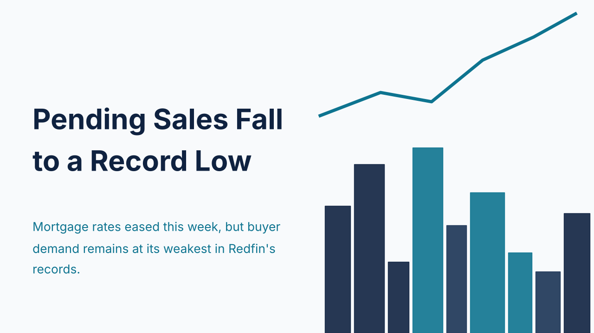
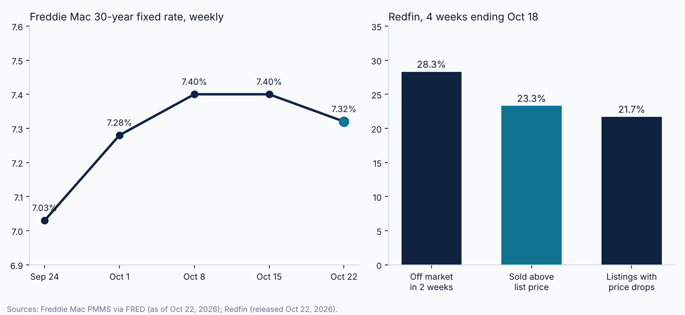

Mortgage Rates Ease to 7.32%, but Pending Sales Fall to a Record Low

Freddie Mac's Primary Mortgage Market Survey put the 30-year fixed rate at 7.32% on October 22, 2026, down from 7.40% the prior week and 1.13 percentage points above the 6.19% recorded a year earlier. The 15-year fixed rate averaged 6.68%, compared with 6.71% the week before and 5.44% a year ago. Freddie Mac notes that the survey reflects conventional, conforming purchase loans for borrowers with 20% down and excellent credit, so investor and non-owner-occupied pricing will differ.
The weekly decline is modest against the recent trajectory. FRED's series for the same survey shows the rate at 7.03% on September 24, 7.28% on October 1, and 7.40% on both October 8 and October 15. A single eight basis point move does little to offset a three-week climb of nearly 40 basis points.
Redfin's four-week report ending October 18, released October 22, shows the demand effect. Seasonally adjusted pending sales totaled 281,749, down 14.4% from a year earlier and the lowest level in Redfin's records. The median monthly mortgage payment reached $2,796 at a 7.4% rate, up 10.4% year over year and the second-highest in Redfin's records, even though the median sale price of $390,614 was up only 0.2%. In other words, financing cost, not price appreciation, is driving the affordability squeeze.

Supply is not tightening in response. Redfin reports active listings of 1,507,161, up 2.1% from a year ago, while new listings fell 2.7% to 354,412. The median home spent 50 days on the market, 28.3% of homes went off the market within two weeks, 23.3% sold above list price, and 21.7% of listings had a price drop. The average sale-to-list ratio was 98.4%. Taken together, those figures describe a market with slow turnover and limited seller pressure rather than a disorderly one.
The practical read for the coming weeks is that a small rate decline has not yet changed buyer behavior. Investors and lenders evaluating deals should model several rate scenarios, allow for a longer time to close, and confirm that coverage and equity thresholds hold with some margin. The next Freddie Mac survey and Redfin's following four-week report will show whether the October 22 decline is the start of a trend or a pause.